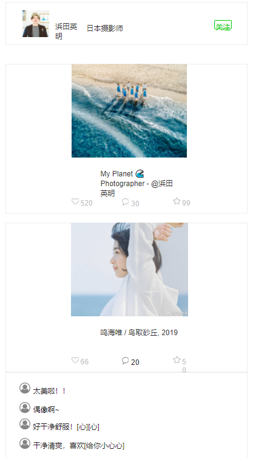

设计说明
简介：Inspiration视觉社区是以“视觉内容”为核心的图片社区网站。
一、一级页面：首页、灵感、社区、投稿、我的
二级页面：灵感-分类、社区-摄影师主页、评论页、我的投稿、关注、收藏、设置
功能安排：
首页：了解每个板块的功能及操作
灵感：可以搜索任意感兴趣的类别
社区：结识摄影师大神，关注他们的动态
投稿：分享个人优秀作品
我的：管理个人投稿、关注和收藏
二、细分【社区】页面一份
1.摄影师头像
2.关注用户
3.摄影作品
4.喜欢的人数
5.图片配文
6.图片下的喜欢
7.评论
8.收藏
9. 评论详情
10.摄影师简介
11.摄影师昵称
13.评论数
14.收藏数
三、版式布局
1.【首页】选择了大版面的布局方式，图片占据了大部分的面积，吸引读者的眼球，强调了该网站的摄影图从视觉重量上比文字要重得多；另外，采用了无线框的布局，给予了留白。
2.【社区】采用了瀑布流的布局方式，整版以图片为主，大小不一的图片按照一定的规律排列。在浏览网站的时候只需要轻轻滑动一下鼠标滚轮，一切的美妙的图片精彩便可呈现在用户面前。
3.【我的】登陆/注册页面采用了卡片式的布局方式，使用卡片的最主要的一点是与用户互动并且让用户自主互动。

重要必须的
重要不必须的
必须不重要的
不必须不重要的
2.关注用户
3.摄影作品
7.评论
9. 评论详情
11.摄影师昵称
4.喜欢的人数
6.图片下的喜欢
13.评论数
8.收藏
14.收藏数
1.摄影师头像
11.摄影师昵称
5.图片配文
10.摄影师简介
